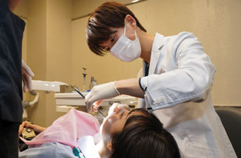
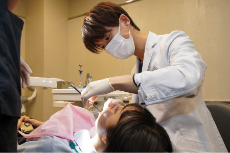

- TOP
- 矯正歯科
注意したい歯並びの乱れの種類
-
歯がでこぼこ
している -

叢生（そうせい）
-
上の前歯が下の前歯
より出ている -
上顎前突（出っ歯）
-
下の歯が上の歯より
も外側にある -
反対咬合（受け口）
-
上下の前歯が全体
的に前に出ている -
上下顎前突
-
奥歯が噛み合っている状態で前歯が空いてしまう
-
開口
-
歯と歯の間にすき間ができている
-
上顎前突（出っ歯）
-
上の歯が下の歯に深く被さっている
-
反対咬合（受け口）
-
上の歯の一部が下の歯の内側に入っている
-
上下顎前突
矯正医が「噛み合わせ」を重視した治療をご提供

矯正治療は歯並びを整える治療とイメージされる方が多いですが、実際は噛み合わせを整える治療です。歯並びを整えるだけでは、根本の噛み合わせの問題が解決されないため後戻りすることが多く、肩こりや頭痛など全身に影響する可能性が高くなります。その結果、再矯正となることも珍しくありません。
また、正しい噛み合わせ歯並びだけでなく歯の寿命を延ばすことにもつながります。ご自身の歯を健康的に長く保つためには噛み合わせを考えた治療が大切です。
新宿の歯医者「新宿ルーブル歯科・矯正歯科」には、矯正医が在籍しています。また、歯科医師全員が院内外で勉強会やセミナーにも参加して最新の治療法や正しい知識を積極的に取り入れています。治療計画や最終的な確認は矯正医である理事長が自ら行い、患者さまの噛み合わせを意識した矯正治療を行っています。
矯正治療で得られるメリット
-
メリット1
コンプレックスを解消できる -
歯並びが整うことで見た目が改善され、自信を持って笑顔になることができます。心も明るく前向きな気持ちで人付き合いができるようになります。
-
メリット2
虫歯・歯周病予防につながる -
歯並び・噛み合わせが改善すると汚れがたまりにくくなります。ブラッシングでプラーク（歯垢）も除去しやすくなるため、お口を健康に保てます。
-
メリット3
発音しやすくなる -
例えば、すきっ歯が改善されると息がもれずに発音しやすくなります。また、矯正により舌の位置が定まりやすくなるため、はっきり発音できるようになります。
-
メリット4
顔のバランスが整う -
歯並びが乱れて前歯の中心線が合わない場合、ゆがんだ見た目となり顔のバランスが悪くなります。歯並びを整えれば顔のバランスは良くなります。
-
メリット5
肩こり・頭痛が改善する -
噛み合わせが悪いと姿勢や身体のバランスが悪くなり、肩こり・頭痛の原因となります。矯正することで全身のバランスが整い、偏頭痛などに悩まされにくくなります。
見た目とともに歯を長く健康に保つ矯正治療を
歯を健康な状態で長く残していくためには噛み合わせがとても大切です。当院では患者さまが80歳になった時に、歯が20本以上残ることをゴールと考え、正しい噛み合わせを意識した矯正治療を行っています。
当院の矯正治療は、見た目と機能面を両立できることが強みです。患者さまご自身の骨格を把握してそれを活かしつつ口や顔のゆがみを矯正します。また、お顔全体の調和を意識し、スマイルラインや横顔、笑った時にどのくらい歯が見えるかなどを丁寧に確認した上で治療を進めます。
矯正医の役目は患者さまが持つ本来の魅力を引き出すことです。矯正治療はご自身に合った治療を提供できる当院にお任せください。
患者さまが気づいていない問題にも踏み込み適切なご提案
当院の矯正治療は、お悩みの原因である主訴の改善はもちろん、患者さまですら気づいていない問題点にまで踏み込みトータルの美しさ・機能性を追求します。カウンセリングでは患者さまからしっかり要望を伺い、気づいていない部分も同時にお伝えします。その上で患者さまとゴールを共有して治療を進めます。
治療が進んで歯並びが整ってくると、「歯ぐきが目立つ」など新たな主訴が出てくることも珍しくありません。そのような時、患者さまの不安を解消してニーズに応えられるかどうかは技術や経験が必要となります。当院では知識・経験豊富な矯正医が、当初の主訴はもちろん、後から出た主訴もできる限り対応しますのでご安心ください。
治療後のアフターケアを大切に
当院は患者さまの歯の健康のためにも治療して終わりではなく、生涯にわたってお付き合いすることが大切だと考えています。そのため治療後のアフターケアにも力を入れていて、保定期間も2年間確保し、後戻りのサポートも行います。継続的な検診はもちろんですが、困っていることがあればインスタグラムからもご相談を受け付けています。装置が外れたなどの緊急時の応急処置もお任せください。
Pick UP
他院からの引継ぎやセカンドオピニオンにも
柔軟に対応しています
当院は、他院にて矯正が難しいと断られたケースやお引越しによって治療の引継ぎが必要な場合でも柔軟に対応可能です。また、セカンドオピニオンにも対応しています。お気軽にご相談ください。
当院の矯正治療について
表側矯正
歯の表側にブラケットと呼ばれる矯正装置を取り付ける方法で、矯正治療では一般的な方法です。ブラケットにワイヤーを通し、牽引力によって歯を動かして歯並びを整えます。費用をリーズナブルに抑えたい方にお勧めです。
裏側矯正（舌側矯正）
歯の裏側（舌側）にブラケットを取り付けて歯を移動させる矯正治療法です。表側矯正と理論的には同じですが、装置が目立ちにくいというメリットがあります。なるべく人に気づかれずに矯正したい方に推奨します。
マウスピース矯正（インビザライン）
患者さまの歯型を採り製作した透明なマウスピース装置を使用する矯正治療法です。歯の動き具合を確認しつつマウスピースを交換し、正しい歯並びに導きます。目立たず気軽に取り外しできるため、負担なく矯正を行えます。
短期間矯正（スピード矯正）
外科手術をすることで歯並びを整える治療法です。当院では歯を支えている顎の骨に溝を入れ、歯への負担を減らしながら動く範囲を拡大させます。一般的な矯正より大幅に治療期間を短縮できますので、治療期間がネックで矯正を諦めていた方にお勧めです。
部分矯正
歯並びが気になる一部分だけを整える方法が「部分矯正（MTM）」です。歯全体を動かすのではなく、一部分だけ動かすため治療期間を短縮することができます。また費用もリーズナブルに抑えられます。
インプラント矯正
装置を使ったワイヤー矯正は強い力をかけにくいため治療に時間がかかります。当院では治療期間を短縮したい方のためにインプラント矯正をご提案可能です。小さな矯正用インプラントを埋め込み、強い力で歯を動かし短期間で矯正できます。
矯正治療のリスクとデメリットについて
- あごに十分なスペースがない場合は抜歯の可能性があります。
- 矯正装置の装着による不快感や痛みを生じることがあります。
- 矯正装置がブラッシングの邪魔になり、虫歯・歯周病のリスクが高まります。
- 歯を動かすことで歯根が短くなったり歯ぐきが痩せたりすることがあります。
- 治療期間中、顎関節症状を感じることがあります。
- 矯正治療後に歯が元の位置に戻ってしまうことがあります。
- 装置を正しく使用しないことで治療期間が延びることがあります。